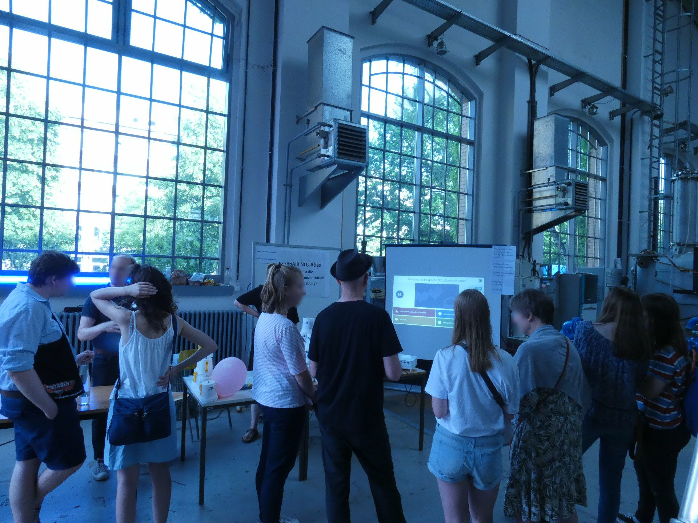
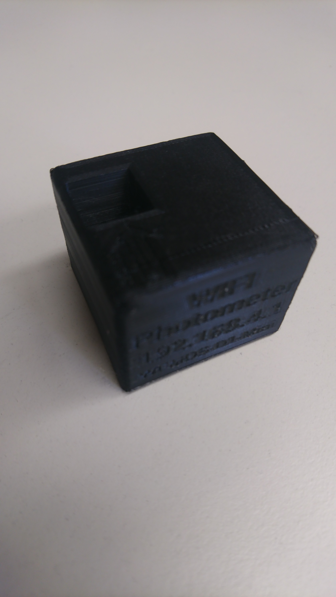

---

title: NO2 - Atlas Berlin
layout: default
---

<!-- Featured -->
		<div class="wrapper style2">
				<section class="container">
					<header class="major">
						<h2>NO2 - Atlas Berlin</h2>
						<span class="byline">Ein Citizen Science Projekt</span>
					</header>
					<div class="row no-collapse-1">
						<section class="4u">
							<a href="mitmachen.html" class="image feature"></a>
							<p>Einfach: Mit so einem Becher messen wir NO2. Wie das geht, zeigen wir hier.</p>
						</section>
						<section class="4u">
							<a href="2019/06/16/lndw.html" class="image feature"></a>
							<p>Erfolgreich: Bei der langen Nacht der Wissenschaften 
								sind wir alle 100 Sammler losgeworden</p>
						</section>
						<section class="4u">
							<a href="2019/05/22/photometer.html" class="image feature"></a>
							<p>Simpel: Messung mit Selbstgebautem Photometer</p>
						</section>

					</div>
				</section>
			</div>

